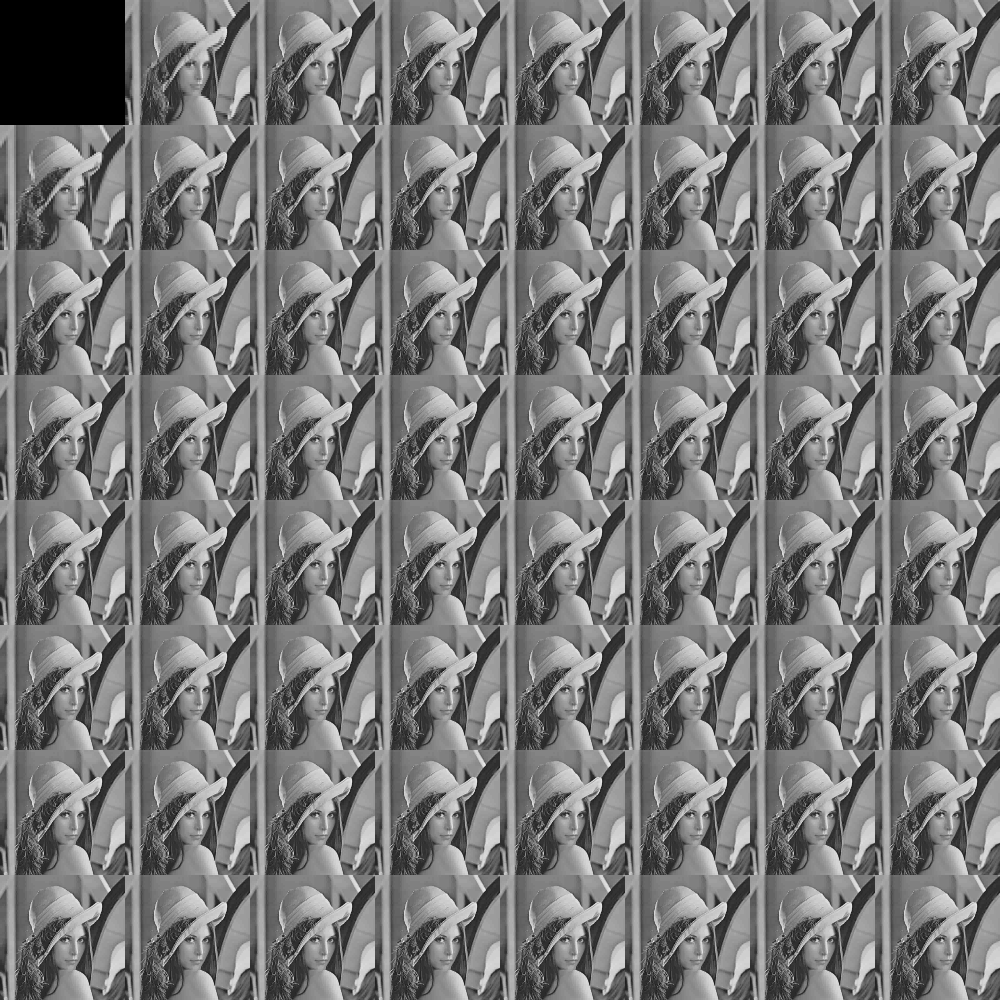
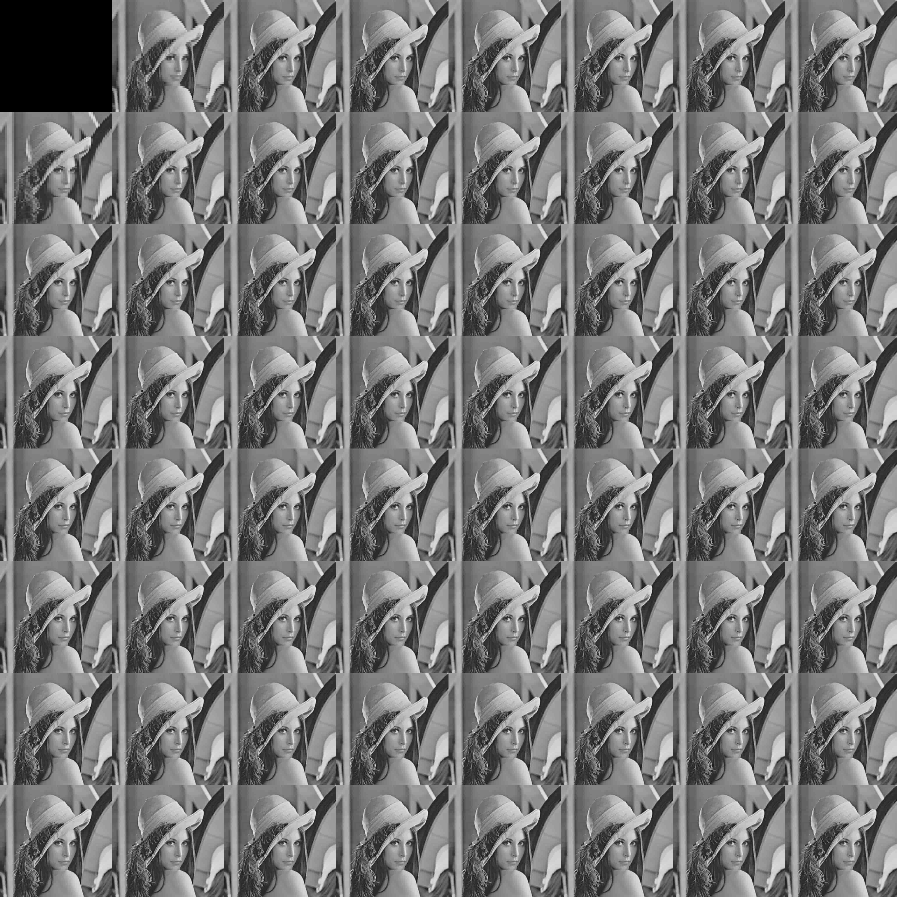
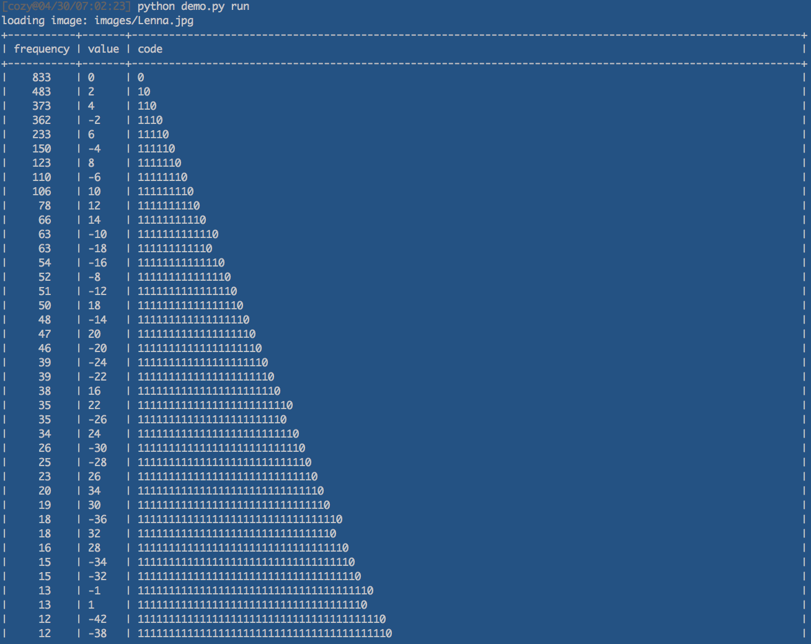
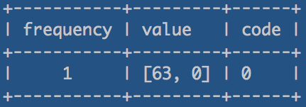

前回のバージョン: 画像の周波数係数のうち, 指定したレベルの高周波数を消去することで, 画像の圧縮を実装.

図1: 前回のバージョンでのデモ
今回のバージョン: 量子化による高周波の切り捨て, DC/AC成分それぞれのゼロレングス/ハフマン符号化を実装.

図2: オリジナルの画像

図3: 量子化された周波数領域

図3: 量子化された周波数領域と画像を重ね合わせたイメージ
imarrayはnumpy.ndarrayを用いたオレオレデータ構造でnumpyの行列演算, 幾つかのPIL API, 画像の表示やファイルの入出力等を行ないます.
このimarrayを用いて, DCT変換とそれを用いたJPEG圧縮のデモを実装しました.
前回のバージョン: 画像の周波数係数のうち, 指定したレベルの高周波数を消去することで, 画像の圧縮を実装.

図1: 前回のバージョンでのデモ
今回のバージョン: 量子化による高周波の切り捨て, DC/AC成分それぞれのゼロレングス/ハフマン符号化を実装.
図2: オリジナルの画像
図3: 量子化された周波数領域
図3: 量子化された周波数領域と画像を重ね合わせたイメージ
デモはimarray.py, zerolengthencoder.py, huffman_encoder.py, jpeg.pyの４つのモジュールからなります.
imarray.imarray : numpy.ndarrayをbaseとして画像処理を行いやすいようにデータ構造を実装.
numpyの行列演算, 幾つかのPIL API, ファイルの入出力機能等を持つ.
zerolengthencoder.ZeroLengthEncoder
: ゼロレングス符号化を実装.
huffman_encoder.HuffmanEncoder
: ハフマン符号化を実装.
jpeg.DCT : 二次元の離散cosine変換を行う,
Frequency Domainを出力するtoFreq, Space Domainを出力するtoSpace関数を持つ.
jpeg.JPEG : 上記のimarray, DCT, ZeroLengthEncoder, HuffmanEncoder を用いて実装.
jpeg.JPEG.encode : imarray.splitでMCUへ分割, DCT.toFreqで周波数領域へ変換, 量子化を行い,
ZIGZAG ORDERにより読み込んだDC/AC成分毎にゼロレングス符号化やハフマン符号化を行う.
jpeg.JPEG.decode : JPEG.encodeと逆の処理を実装.
demo.pyにデモのプログラムを実装しています.
demo.pyでは, 指定した画像を読み込み, 以下の手順でエンコード/デコードを行います.

図4: 上:オリジナル(グレースケール), 下:実装したJPEGのデコード結果.

図5: 各MCUのDC成分を差分として記録し, それらをハフマン符号化したときのハフマンテーブル.

図6: 各MCUのAC成分の符号化例1

図7: 各MCUのAC成分の符号化例2
ゼロレングス符号化, ハフマン符号化の両方を適用し, コンパクトに符号化出来るようハフマンテーブルが作成できている.
pip install -r myjpeg/requirements.txtpython demo.py run images/Lenna.jpg